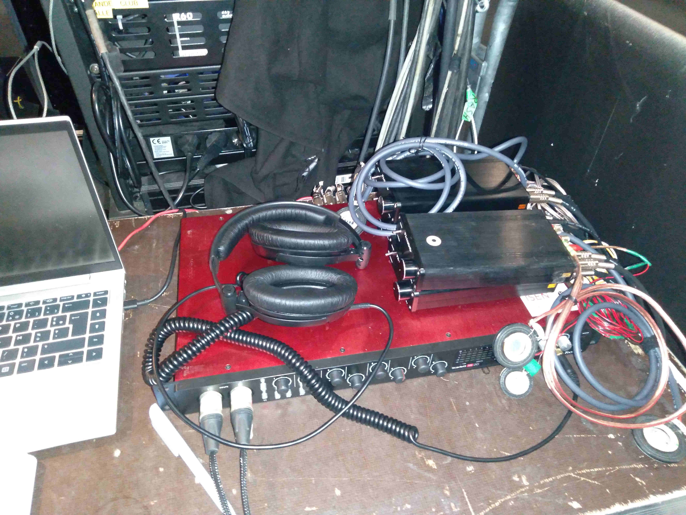
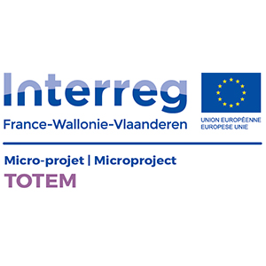
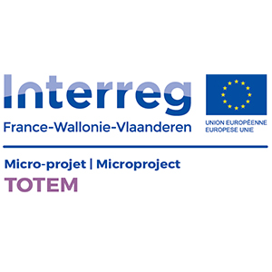

Concerts
!!!upcoming!!! Concert #6 (2025-05-16) as an 'extra muros' event
We're very pleased to announce that our next concert will take place at our friends at Bonjour Minuit in Saint-Brieuc
Concert #5 (2025-01-30)
At Aéronef (Lille, FR), during the shows by La Rue Kétanou/Les Ogres de Barback + Oaiao. Alban Briceno (Vibstra ) presented his Pacini 8 device, allowing to compose vibrotactile music and to display it over 8 embedded devices; our team presented an offline version of the TOTEM device; and we had the pleasure to have Osc'Art sign singing the whole show!!
Concert #4 (2023-04-05)
At Aéronef (Lille, FR), during the shows by Les DeuxLuxes + Daddy Long Legs. Enrico (Vedanity affair) started our side show with his "perceive the music differently" demonstrations, and then we had the pleasure to have 15 newcomers testing or vibrating devices: welcome!

Concert #3 (2023-01-27)
At Aéronef (Lille, FR), during the shows by Ravage Club + Mlle K. Once again, we invited Enrico (Vedanity affair) for a session of music visualization

Concert #2 (2022-11-16)
At Le Flow (Lille, FR), during the "Bal lusitano" (Throes + The Shine / Batida / King Kami + Pedro Da Linha). Again, we invited Enrico (Vedanity affair) for a session of music visualization

Concert #1 (2022-07-12)
At Aéronef, during the shows by Star Feminine Band + BCUC: 2 test sessions. Also, Enrico (Vedanity affair) and Océane (sign language interpreter) demonstrated some visualization of sound

Concert #0 (2022-06-20)
Warming up during Aéro Easy Tour 2022...


 
